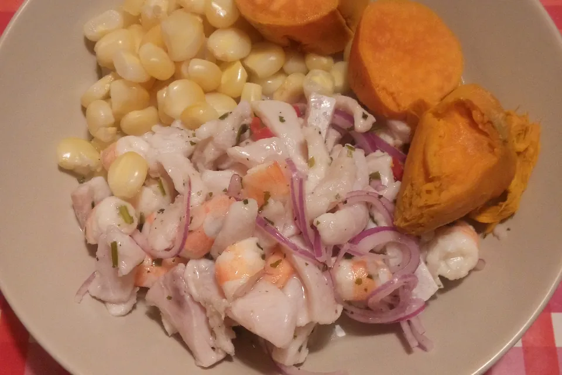

Seafood restaurants
Many travelers start with cevicherías near Miraflores and other coastal districts.
Ceviche is one of the most recognizable dishes in Peru. In Lima, visitors can find both traditional and modern versions, often prepared with fresh fish, lime, onion, and chili.
It is usually one of the first dishes recommended to travelers who want to experience local cuisine.

Many travelers start with cevicherías near Miraflores and other coastal districts.
Local markets and neighborhood areas can offer quick and affordable food options.
Lima also stands out for creative restaurants that reinterpret Peruvian ingredients.